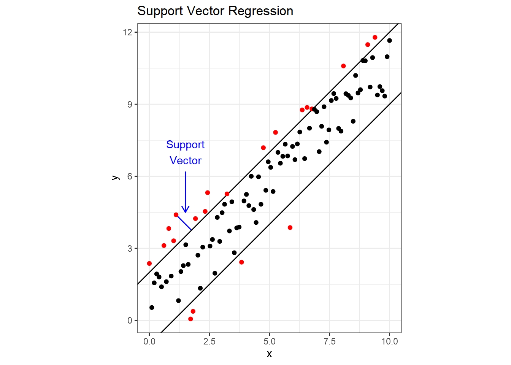
Support Vector Machines
SVR attempts to include as many data points as possible in the area between two lines. The following figure demonstrates this using dummy data with a linear relationship. The two parallel lines are the margin, and it’s width is a hyperparameter \(\varepsilon\) that we can tune. If you draw a line through one of the points that fall outside the margin so that it is perpendicular to the margin, you have a support vector. A cost is applied to each point that falls outside the margin, and minimizing the cost determines the slope of the margin. Cost is another tunable hyperparameter, which is sometimes represented as \(1/\lambda\). Notice that unlike linear regression, if we were to add more points inside the margin, it would have no impact on the slope. SVR is also much less influence by outliers than linear regression. For the mathematical details behind SVR, refer to Section 12.3.6 in Trevor Hastie and Friedman (2008).
Choosing values for the hyperparameters \(\varepsilon\) and \(\lambda\) is once again done through cross validation. To do this in R, we’ll use some functions from the e1071 package (another option is the LiblineaR package). Before we get to cross validation, let’s just look at how to build an SVR model. The syntax is the same as for linear models, we just replace lm() with svm(). Note that the function is not svr() because the function can do both regression and classification. To make this more interesting, we’ll switch back to the airquality data. From the model summary below, SVM-type: eps-regression tells us that the function is performing regression and not classification, then we see the hyperparameter values and the number of support vectors used to fit the model.
For the kernel, we have four choices: linear, polynomial, radial basis, and sigmoid. Selecting a linear kernel will force a straight line fit, and the other three kernels are different methods for adding curvature to the regression line1. The theory behind SVR kernels is beyond the scope of this tutorial, but if you want to dig deeper:
Here are some slides titled SVM dual, kernels and regression from The University of Oxford.
Here’s An Idiot’s Guide to Support Vector Machines, a catchy title from MIT.
Here’s post titled Support Vector Machine: Kernel Trick; Mercer’s Theorem at towardsdatascience.com.
For our purposes, we just need to know that the three non-linear kernels have gamma as a hyperparameter that controls curvature.
To force a straight regression line, specify kernel='linear'. Also, the svm() by default scales all variables in the data set to have a mean of zero and equal variance. Scaling the variables will improve the model’s performance, but we’ll turn that off in this example so we can directly compare the coefficients to those produced by lm().
library(e1071)
aq = airquality %>% drop_na()
aq.svm = svm(Ozone ~ Solar.R, data=aq, kernel='linear', scale=FALSE)
summary(aq.svm)
Call:
svm(formula = Ozone ~ Solar.R, data = aq, kernel = "linear", scale = FALSE)
Parameters:
SVM-Type: eps-regression
SVM-Kernel: linear
cost: 1
gamma: 1
epsilon: 0.1
Number of Support Vectors: 110We can then extract the coefficients with coef().
(coeffs = coef(aq.svm))(Intercept) Solar.R
12.52321429 0.09107143 Using lm(), we get the following coefficients.
aq.lm = lm(Ozone ~ Solar.R, data=aq)
summary(aq.lm)
Call:
lm(formula = Ozone ~ Solar.R, data = aq)
Residuals:
Min 1Q Median 3Q Max
-48.292 -21.361 -8.864 16.373 119.136
Coefficients:
Estimate Std. Error t value Pr(>|t|)
(Intercept) 18.59873 6.74790 2.756 0.006856 **
Solar.R 0.12717 0.03278 3.880 0.000179 ***
---
Signif. codes: 0 '***' 0.001 '**' 0.01 '*' 0.05 '.' 0.1 ' ' 1
Residual standard error: 31.33 on 109 degrees of freedom
Multiple R-squared: 0.1213, Adjusted R-squared: 0.1133
F-statistic: 15.05 on 1 and 109 DF, p-value: 0.0001793The coefficients produced by the two models might seem fairly different. The following plot shows the data with the two regression lines for comparison. Notice how the linear model is more influenced by the extreme high ozone values (possible outliers).
ggplot() +
geom_point(data = aq, aes(x=Solar.R, y=Ozone)) +
geom_abline(slope=coeffs[2], intercept=coeffs[1], color='red') +
annotate("text", x=315, y=50, label="svm()", color='red') +
geom_abline(slope=aq.lm$coefficients[2],
intercept=aq.lm$coefficients[1],
color='blue') +
annotate("text", x=315, y=70, label="lm()", color='blue') +
theme_bw()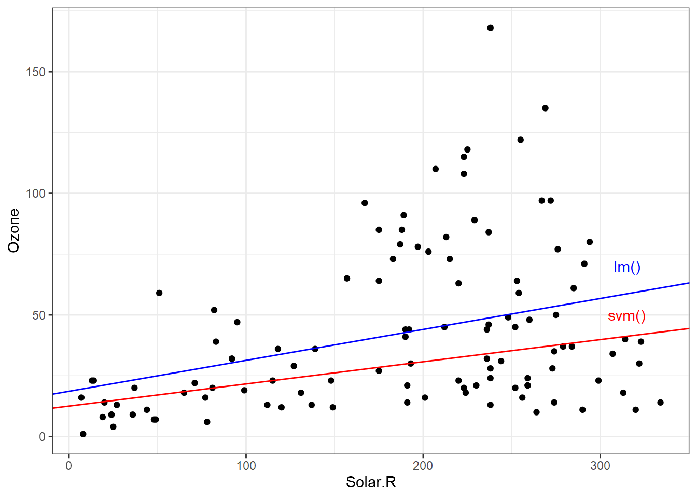
Now we’ll re-fit the model with a non-linear regression line and invoking scaling. To extract the predicted response, we use the predict() function just like with linear models. Plotting the predicted response gives is the following.
aq.svm2 = svm(Ozone ~ Solar.R, data=aq)
aq = aq %>% mutate(svrY = predict(aq.svm2, data=aq))
ggplot(aq) +
geom_point(aes(Solar.R, Ozone), color='black') +
geom_line(aes(Solar.R, svrY), color='red') +
ggtitle("SVR With Default Hyperparameters") +
coord_fixed() +
theme_bw()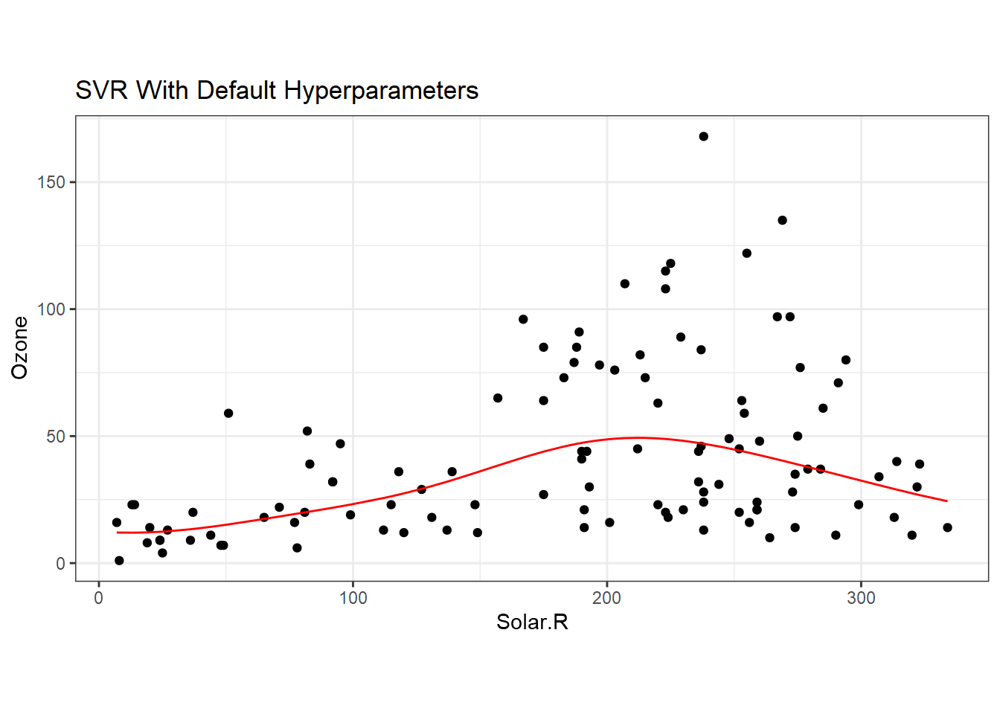
To tune the hyperparameters with cross validation, we can use the tune function from the e1017 package. If we give the tune function a range of values for the hyperparameters, it will perform a grid search of those values. In the following example, we’re therefore fitting 100 different models. If we print the object returned from tune, we see that it performed 10-fold cross validation, the best hyperparameter values, and the mean squared error of the best performing model.
set.seed(42)
aq.tune = tune.svm(Ozone ~ Solar.R,
data = aq, gamma=seq(0.1, 1, 0.1),
cost = seq(1, 100, 10))
print(aq.tune)
Parameter tuning of 'svm':
- sampling method: 10-fold cross validation
- best parameters:
gamma cost
0.1 91
- best performance: 909.1502 We can visualize the tune results as well by printing the aq.tune object. Here we see the range of cost and epsilon values with their associated mean squared error. The lower the error, the better, and those are indicated by the darkest blue regions.
plot(aq.tune)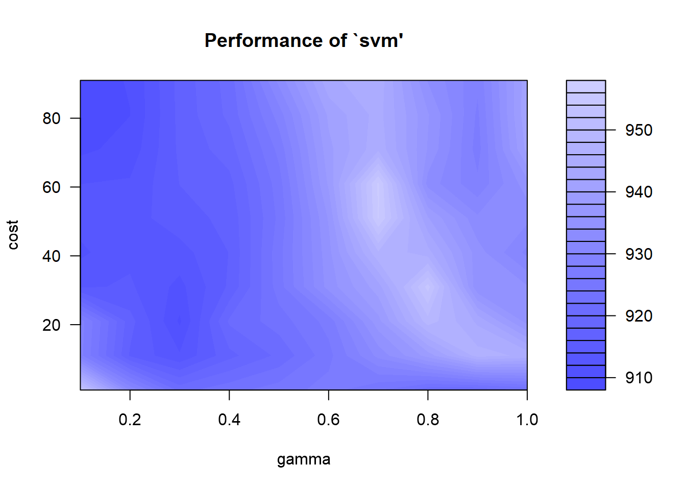
I prefer to choose a wide range of tuning parameter values initially, and then do a finer search in the area with the lowest error. It looks like we need a low gamma and a high cost.
set.seed(42)
aq.tune = tune.svm(Ozone ~ Solar.R,
data = aq,
gamma=seq(0.02, 0.22, 0.05),
cost = seq(80, 100, 2))
print(aq.tune)
Parameter tuning of 'svm':
- sampling method: 10-fold cross validation
- best parameters:
gamma cost
0.22 96
- best performance: 907.4115 The best model from the tuning call can be obtained with aq.tune$best.model, and we can then apply the predict function to get the best fit regression.
aq$svrY = predict(aq.tune$best.model, data=aq)
ggplot(aq) +
geom_point(aes(Solar.R, Ozone), color='black') +
geom_line(aes(Solar.R, svrY), color='red') +
ggtitle("SVR With Tuned Hyperparameters") +
coord_fixed() +
theme_bw()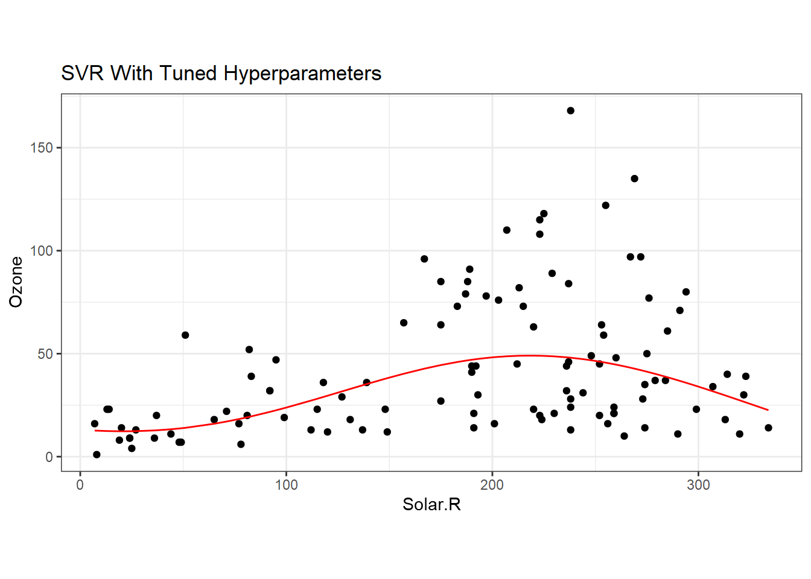
Support Vector Classification
Classification problems have either a binary or categorical response variable. To demonstrate how SVC works, we’ll start with the iris data set, which contains four predictors and one categorical response variable. Plotting petal length versus petal width for the setosa and versicolor species shows that the two species are linearly separable, meaning we can draw a straight line on the plot that completely separates the two species. If we want to train an SVC to make predictions on new data, the question becomes: how do we draw the line that separates the data? There are infinitely many options, three of which are shown on the plot.
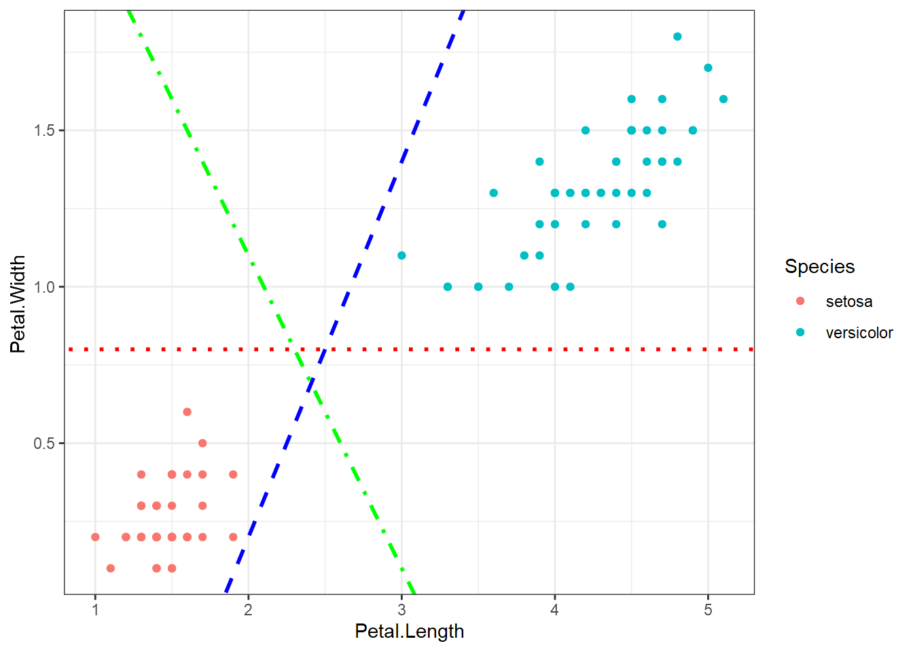
Support vector classification uses margins, but in a different way than SVR, to find a line that separates the data. If you think of the two parallel margin lines as a street, the idea is that we want to fit the widest possible street between the species because doing so results in the rest of the data points being as far off the street as possible. The two points below that fall on the margin determine the location of the support vectors.
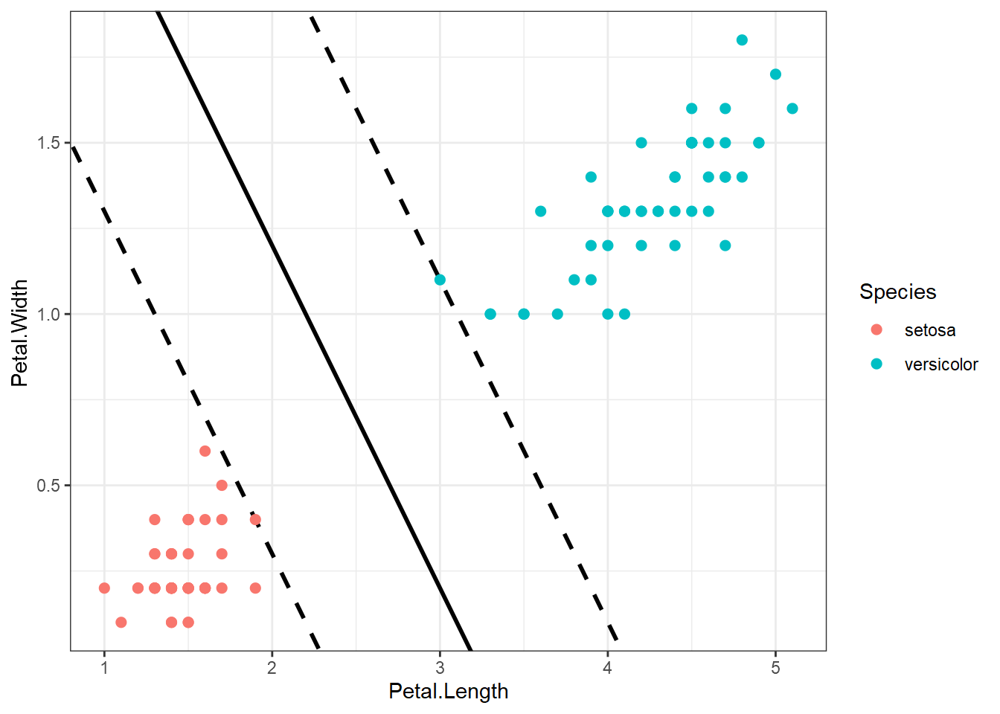
What happens when two categories aren’t linearly separable, as is the case when we look at versicolor and virginica below?
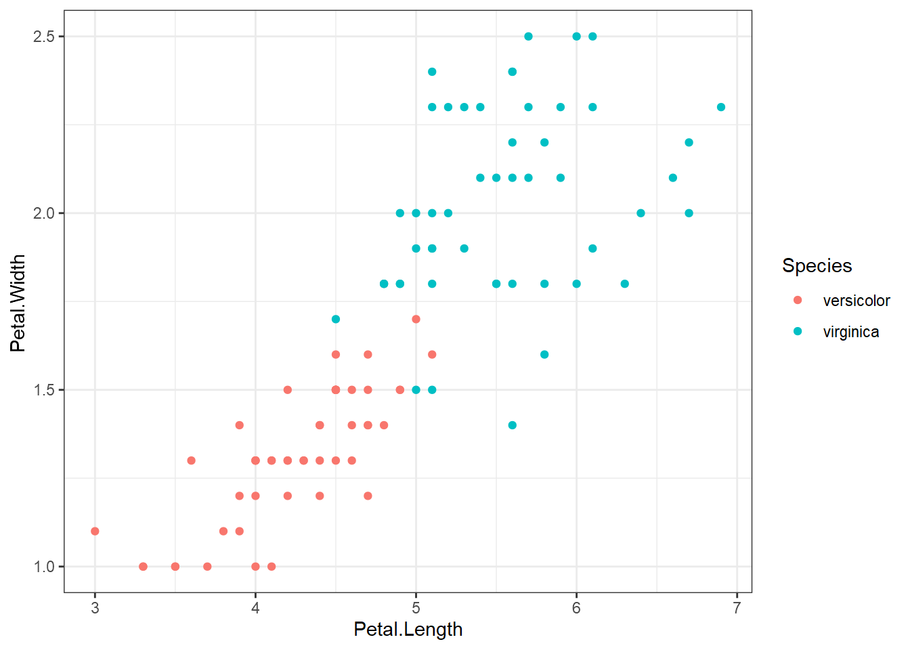
We still want to draw two parallel lines through the data sets, but the only way to do it is to have some observations in the middle of the street, or even on the wrong side of the line (called margin violations). We still want to fit as wide of a street as possible through the data points, but now we must also limit the number of margin violations. As with SVR, we can assign a cost for each margin violation. Since margin violations are generally bad, we might be tempted to apply a large cost; however, we must also consider how well the model will generalize. Below are the linear boundaries for two choices of cost. Support vectors are based on the points surrounded by black.
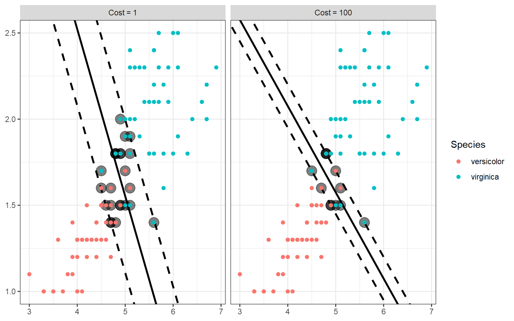
Interestingly, the margins (and therefore the decision boundary) don’t have to be straight lines. SVC also accommodates a curved boundary as in the example below. With a polynomial kernel, the curvature is controlled by the degree of the polynomial. In the plot, note that the support vectors are the X points.
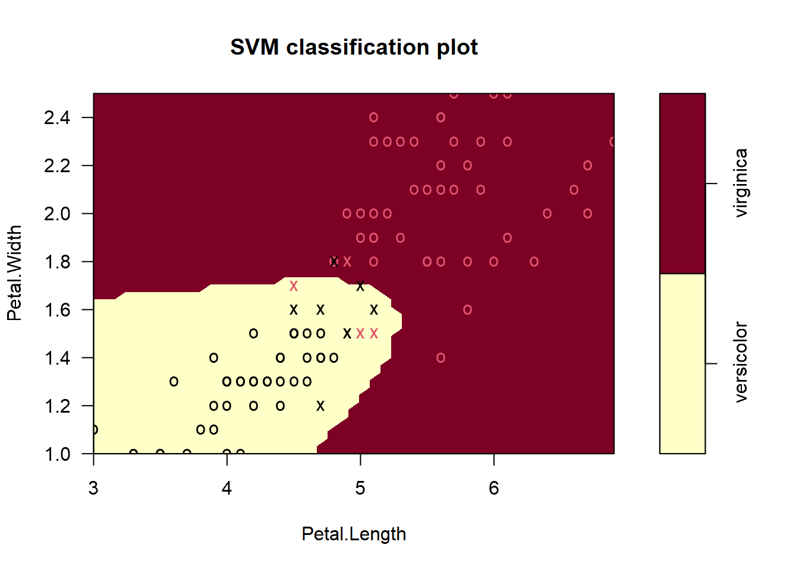
Example In R
In this section, we’ll walk through an example using the full iris data set. First, we’ll split the data set into a training set that includes 80% of the data, and a test set with the remaining 20% using the caTools package.
set.seed(0)
train = caTools::sample.split(iris, SplitRatio = 0.8)
iris_train = subset(iris, train == TRUE)
iris_test = subset(iris, train == FALSE)Next, we’ll tune two models using a linear kernel and a radial basis function (which allows for curvature). We’ll tune both models over a range of gamma and cost values.
iris.lin = tune.svm(Species~., data=iris_train,
kernel="linear",
gamma = seq(0.1, 1, 0.1),
cost = seq(1, 100, 10))
iris.rbf = tune.svm(Species~., data=iris_train,
kernel="radial",
gamma = seq(0.1, 1, 0.1),
cost = seq(1, 100, 10))
iris.lin$best.model
Call:
best.svm(x = Species ~ ., data = iris_train, gamma = seq(0.1, 1,
0.1), cost = seq(1, 100, 10), kernel = "linear")
Parameters:
SVM-Type: C-classification
SVM-Kernel: linear
cost: 1
Number of Support Vectors: 25iris.rbf$best.model
Call:
best.svm(x = Species ~ ., data = iris_train, gamma = seq(0.1, 1,
0.1), cost = seq(1, 100, 10), kernel = "radial")
Parameters:
SVM-Type: C-classification
SVM-Kernel: radial
cost: 1
Number of Support Vectors: 48Both models are using a low cost, but the radial basis function model has twice as many support vectors. To compare model performance, we’ll make predictions using the test set and display each model’s confusion matrix using the cvms package (note: we could also create a simple confusion matrix with table(iris_test[, 5], predictions)).
# get the confusion matrix for the linear kernel
lin_conf_mat = cvms::confusion_matrix(
targets = iris_test[, 5],
predictions = predict(iris.lin$best.model, type = 'response', newdata = iris_test[-5]))
# get the confusion matrix for the radial kernel
rbf_conf_mat = cvms::confusion_matrix(
targets = iris_test[, 5],
predictions = predict(iris.rbf$best.model, type = 'response', newdata = iris_test[-5]))
# plot the confusion matrix for the linear kernel (it's a ggplot2 object!)
cvms::plot_confusion_matrix(lin_conf_mat$`Confusion Matrix`[[1]]) +
ggtitle("Linear Kernel")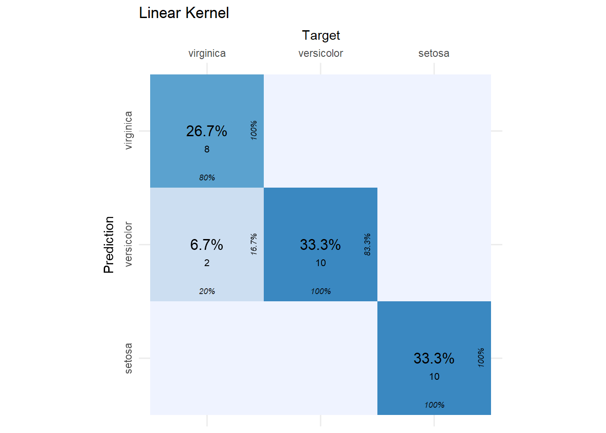
The SVC model with the linear kernel did a great job! Of the 30 observations in the test set, only two were incorrectly classified. If this is the first time you’ve seen a confusion matrix, then what you see are the target (or actual) species by column and the species predictions from the SVC by row. In each cell, we see the percent and count of the total observations that fell into that cell. From this plot, we can identify true positives, false positives, etc. using the following guide.
| Confusion Matrix | Target | ||
| Yes | No | ||
| Prediction | Yes | True Positive | False Positive |
| No | False Negative | True Positive |
A perfect classifier will have zeros everywhere in the table except the diagonal. In our case, it’s close to perfect. We just have two false negatives because two flowers that were actually virginica, were predicted to be versicolor. Now let’s look at the radial kernel results.
cvms::plot_confusion_matrix(rbf_conf_mat$`Confusion Matrix`[[1]]) +
ggtitle("Radial Kernel")References
Trevor Hastie, Robert Tibshirani, and Jerome Friedman. 2008. The Elements of Statistical Learning. Springer.
Footnotes
Changing the kernel to specify the type of fit is known as the kernel trick.↩︎